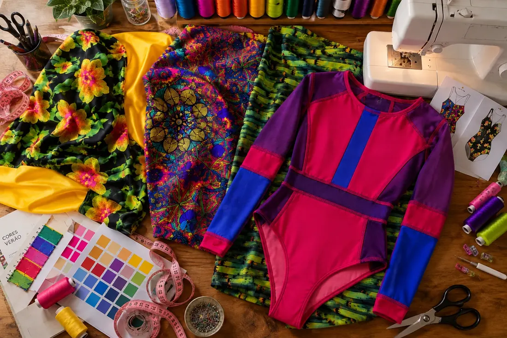
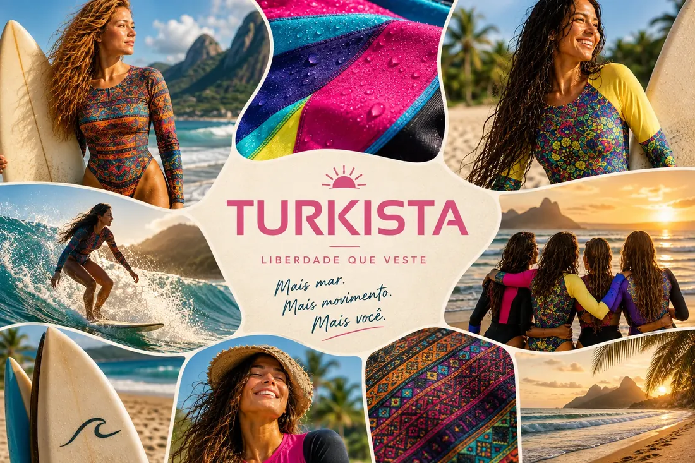
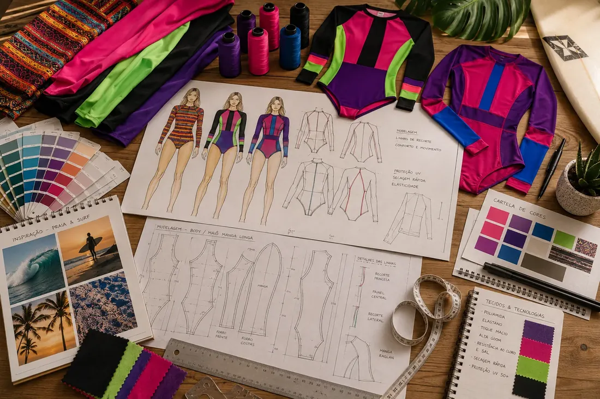
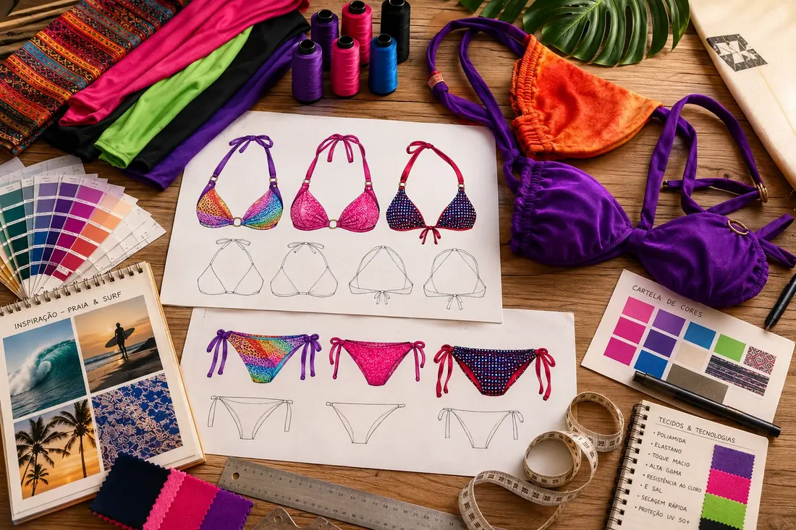

Feita para o seu movimento — desde o ateliê da família

Antes de ser empresa, a Turkista foi infância dentro de um ateliê de costura. Danielle cresceu vendo a mãe costurar, ajudando — junto com o irmão — a cortar linha nos arremates.
Anos depois, uma tentativa de profissionalizar o negócio não vingou, e o projeto ficou de lado enquanto ela seguia outros caminhos — incluindo um período morando na Turquia, em busca das próprias origens. De volta ao Brasil, já mãe, Danielle voltou a morar em Araruama, literalmente dentro do ateliê que foi da mãe. Redescobriu tecidos de lycra guardados e retalhos de uma antiga coleção, e começou a projetar novas peças.
Hoje é ela quem corta, modela e produz cada peça Turkista, com um objetivo simples: transformar esse estoque exclusivo em uma marca reconhecida na Região dos Lagos.
Acreditamos que roupa de movimento não pode ser genérica. Cada corpo pede um tecido diferente para treinar, surfar ou tomar sol — e cada peça Turkista é pensada para isso. Não terceirizamos a costura nem a qualidade: fazemos com as próprias mãos, do corte ao acabamento. Não fazemos grandes lotes: fazemos peças exclusivas, feitas para durar. Acreditamos em conserto, não em descarte. E acreditamos que qualidade se sente — no tecido, na costura, no caimento.
Valores
- Fabricação própria — controle total sobre corte, costura e acabamento.
- Tecido certo para o movimento certo — musculação, aeróbico, surf e praia pedem tecidos diferentes.
- Durabilidade — peças que não desbotam, não rasgam e aceitam conserto.
- Herança artesanal — o saber de costurar e modelar vem de família.
- Conforto com segurança — sustentação onde o corpo precisa, liberdade onde o movimento pede.
Do tecido guardado à peça pronta
Fabricação própria não é discurso — é o corte, a costura e o acabamento acontecendo no mesmo ateliê onde tudo começou.


